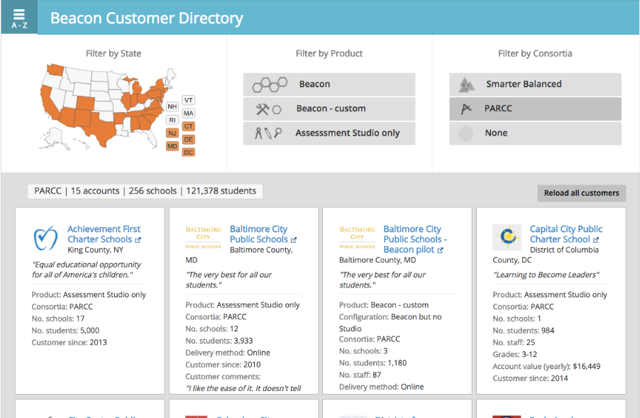

This chart about student test results over time is hard to understand.
After
News designs. Each one highlights a different aspect of the data, allowing the reader to make informed decisions.
The Winner
The client liked how this shows off changes in population size over time.
Information Architecture
Before
Overly-complicated information architecture for a web application.
After
The new information architecture is easier to navigate without any loss of functionality.
User Research
Interactive Customer Directory
I made this online customer directory for the product development team to feel closer to our customers but it quickly became popular with sales and marketing teams.
Sprint Story Graphics
I visualized the product development's sprint stories through the perspective of our customers.
User research repository
All research data in a shared, searchable Evernote account for the entire team to access. Tags and notebooks make the data easy to find while still being easy to add.
Page Flows
Mobile app
PDF Reports
Before & After
The old PDF report printed on too many sheets of paper and did not sort rows in a meaningful way. The new report has more rows per page and groups approved versus unapproved standards.
Wireframes
Desktop
Mobile
Prototypes
Before
This modal has a confusing layout and an outdated look.
After
The new prototype created in HTML/CSS/Javascript has a modern Bootstrap-based style and orders the elements so the user knows the correct order in which to interact with them.


{kind=link}
{kind=link}